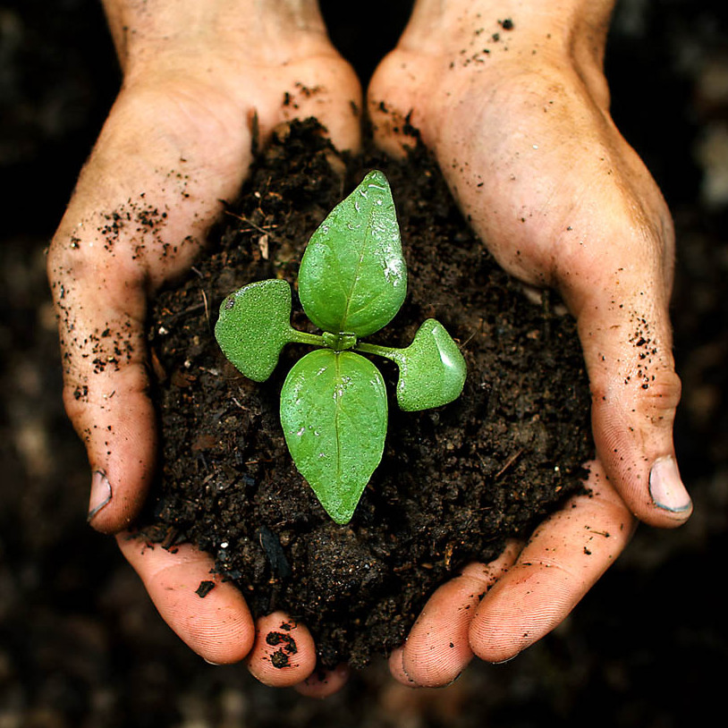

Dirt never looked so good.
Take care of the environment. Plant some trees and flowers. Beautify your neighborhood. Start a community garden. Recycle regularly. Make Compost. Use natural fertilizers. Use recycled paper and cardboard. Lower your home thermostats. Turn off lights and electronic devices when you’re not using them.